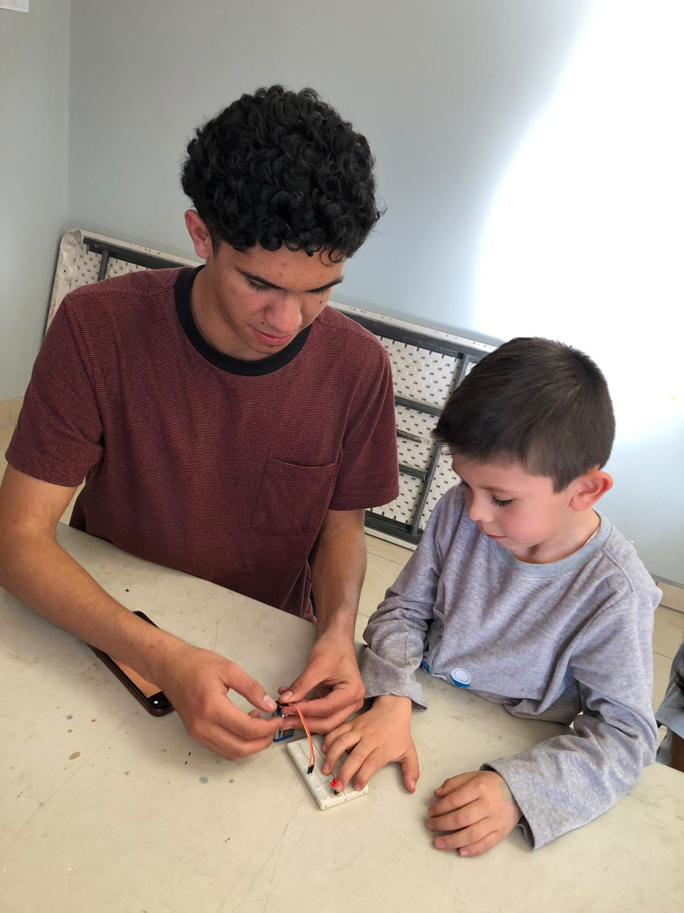

Día del torneo. Gradas llenas, ruido de motores y cables por todos lados. Tu hijo está en la mesa de pits intentando arreglar un engrane que no gira. Instintivamente, quieres acercarte, tomar el destornillador y arreglarlo tú mismo en 30 segundos. Alto ahí.
Las competencias de robótica son eventos altamente emocionales, tanto para los alumnos como para los padres. Saber cuál es tu rol puede ser la diferencia entre una experiencia de gran aprendizaje y un día lleno de frustraciones.
Lo que SÍ debes hacer
1. Ser el Gerente de Logística
Los equipos necesitan comer, hidratarse y dormir. A menudo, los chicos están tan concentrados en el código que olvidan tomar agua. Tu trabajo es asegurar que los sándwiches lleguen a tiempo, las baterías estén cargando en la base y los nervios estén contenidos. Eres el equipo de boxes humano.
2. Celebrar el Fracaso Elegante
El robot va a fallar. Garantizado. Se va a desconectar un cable, el sensor leerá mal un color o una rueda se atascará. Cuando el equipo regrese de la pista con una puntuación de cero, tu reacción dicta cómo asimilarán ellos el error. Un «¿qué creen que pasó?» ayuda mucho más que un «ay, qué mala suerte».
3. Ser el "Escudo Humano"
Durante la competencia, otros equipos (o sus padres) pueden ponerse tensos o competitivos. Protege el ambiente de tu equipo manteniendo la calma y recordando a todos que el objetivo es divertirse y aprender.
Lo que NO debes hacer
1. Tocar el Robot
Esta es la regla de oro en casi todos los torneos oficiales (y puede ser causa de descalificación). El robot es de los alumnos. Si un cable está suelto, dile a tu hijo: "Revisa la conexión del puerto A". Nunca lo conectes tú.
En un torneo, el producto final no es el robot, es el alumno. Si tú arreglas el robot, rompes el producto final.
2. Discutir con los Jueces
Las reglas a veces parecen injustas y las decisiones de los jueces pueden ser cuestionables (son humanos). Sin embargo, parte del aprendizaje de la robótica es lidiar con variables fuera de control. Enseña a tu hijo a hacer preguntas respetuosas al juez si no está de acuerdo, pero nunca interfieras desde las gradas.
3. Poner más presión de la necesaria
Para muchos niños, competir ya es suficientemente estresante. Evita comentarios sobre cuánto costó la inscripción, el viaje o el robot. Están ahí para aprender ingeniería y trabajo en equipo, no para salvar las finanzas de la familia con un trofeo.
El verdadero triunfo: La competencia termina el domingo, pero las habilidades de resolución de problemas bajo presión, el trabajo en equipo y la resiliencia les durarán toda la vida.
Si eres un colegio y buscas preparar a tus equipos (y a sus padres) para la temporada de competencias, platiquemos. En Cultivatec tenemos metodologías específicas para llegar a los torneos con la mejor actitud.